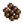

User:Pangaea/Artisan Jars vs Kegs
Jump to navigation
Jump to search
This is an attempt at directly comparing the profitability of Preserves Jars and Kegs, based on processing time instead of increase in value. Couldn't find a way to merge wikitables, so had to "borrow" a page on MediaWiki since they have visual editing capability there, which makes it much easier to mass edit tables in this fashion by outright deleting a few columns and creating new ones. Sadly it didn't work to copy back in whole columns, so seems like the rest of the process must be done manually. This is where Cargo or DPL would have been real handy, so that is something to think about for future games.
| Input Item | Type | Quality | Input Item Sell Price | Processed in Sell Price | Approximate g/day in [1] | Processed in Sell Price | Approximate g/day in [1] | Most Profitable in g/day |
|---|---|---|---|---|---|---|---|---|
| Veg | Regular | 165 | 490 | 130 | 471 | 82 | +58.54% in | |
| Veg | 205 | 490 | 114 | 471 | 70 | +62.86% in | ||
| Veg | 247 | 490 | 98 | 471 | 59 | +66.1% in | ||
| Veg | 330 | 490 | 64 | 471 | 38 | +68.42% in | ||
| Fruit | Regular | 605 | 1610 | 402 | 2310 | 274 | +46.72% in | |
| Fruit | 755 | 1610 | 342 | 2310 | 250 | +36.8% in | ||
| Fruit | 907 | 1610 | 282 | 2310 | 224 | +25.89% in | ||
| Fruit | 1210 | 1610 | 160 | 2310 | 176 | +10% in | ||
| Fruit | Regular | 110 | 350 | 96 | 420 | 50 | +92% in | |
| Fruit | 137 | 350 | 85 | 420 | 45 | +88.89% in | ||
| Fruit | 165 | 350 | 74 | 420 | 42 | +76.19% in | ||
| Fruit | 220 | 350 | 53 | 420 | 32 | +65.63% in | ||
| Fruit | Regular | 55 | 210 | 62 | 210 | 26 | +138.46% in | |
| Fruit | 68 | 210 | 58 | 210 | 22 | +163.64% in | ||
| Fruit | 82 | 210 | 51 | 210 | 21 | +142.86% in | ||
| Fruit | 110 | 210 | 40 | 210 | 16 | +150% in | ||
| Veg | Regular | 176 | 518 | 138 | 504 | 88 | +56.82% in | |
| Veg | 220 | 518 | 120 | 504 | 75 | +60% in | ||
| Veg | 264 | 518 | 102 | 504 | 64 | +59.38% in | ||
| Veg | 352 | 518 | 67 | 504 | 40 | +67.5% in | ||
| Fruit | Regular | 165 | 490 | 130 | 630 | 75 | +73.33% in | |
| Fruit | 205 | 490 | 114 | 630 | 69 | +65.22% in | ||
| Fruit | 247 | 490 | 98 | 630 | 61 | +60.66% in | ||
| Fruit | 330 | 490 | 64 | 630 | 48 | +33.33% in | ||
| Veg | Regular | 110 | 350 | 96 | 315 | 54 | +77.78% in | |
| Veg | 137 | 350 | 85 | 315 | 48 | +77.08% in | ||
| Veg | 165 | 350 | 74 | 315 | 40 | +85% in | ||
| Veg | 220 | 350 | 53 | 315 | 26 | +103.85% in | ||
| Fruit | Regular | 20 | 126 | 43 | 84 | 10 | +330% in | |
| Fruit | 25 | 126 | 40 | 84 | 10 | +300% in | ||
| Fruit | 30 | 126 | 38 | 84 | 8 | +375% in | ||
| Fruit | 40 | 126 | 35 | 84 | 6 | +483.33% in | ||
| Fruit | Regular | 22 | 126 | 42 | 84 | 10 | +320% in | |
| Fruit | 44 | 126 | 34 | 84 | 6 | +466.67% in | ||
| Fruit | Regular | 60 | 126 | 27 | 84 | 3 | +350% in | |
| Fruit | 75 | 126 | 21 | 84 | 2 | +320% in | ||
| Fruit | 90 | 126 | 14 | 84 | -2 | (N/A) | ||
| Fruit | 120 | 126 | 3 | 84 | -6 | (N/A) | ||
| Fruit | Regular | 66 | 126 | 24 | 84 | 3 | +700% in | |
| Fruit | 132 | 126 | -3 | 84 | -8 | (N/A) | ||
| Fruit | Regular | 55 | 210 | 62 | 210 | 26 | +138.46% in | |
| Fruit | 68 | 210 | 58 | 210 | 22 | +163.64% in | ||
| Fruit | 82 | 210 | 51 | 210 | 21 | +142.86% in | ||
| Fruit | 110 | 210 | 40 | 210 | 16 | +150% in | ||
| Veg | Regular | 88 | 294 | 83 | 252 | 43 | +93.02% in | |
| Veg | 110 | 294 | 74 | 252 | 38 | +94.74% in | ||
| Veg | 132 | 294 | 66 | 252 | 32 | +106.25% in | ||
| Veg | 176 | 294 | 48 | 252 | 21 | +128.57% in | ||
| Fruit | Regular | 75 | 280 | 82 | 315 | 38 | +115.79% in | |
| Fruit | 93 | 280 | 75 | 315 | 35 | +114.29% in | ||
| Fruit | 112 | 280 | 67 | 315 | 32 | +109.38% in | ||
| Fruit | 150 | 280 | 53 | 315 | 27 | +96.3% in | ||
| Fruit | Regular | 82 | 280 | 80 | 315 | 37 | +116.22% in | |
| Fruit | 102 | 280 | 72 | 315 | 34 | +111.76% in | ||
| Fruit | 123 | 280 | 62 | 315 | 30 | +106.67% in | ||
| Fruit | 165 | 280 | 46 | 315 | 24 | +91.67% in | ||
| Veg | Regular | 192 | 560 | 147 | 550 | 96 | +53.13% in | |
| Veg | 239 | 560 | 128 | 550 | 83 | +54.22% in | ||
| Veg | 288 | 560 | 109 | 550 | 70 | +55.71% in | ||
| Veg | 385 | 560 | 70 | 550 | 45 | +55.56% in | ||
| Fruit | Regular | 88 | 294 | 83 | 336 | 40 | +107.5% in | |
| Fruit | 110 | 294 | 74 | 336 | 37 | +100% in | ||
| Fruit | 132 | 294 | 66 | 336 | 32 | +106.25% in | ||
| Fruit | 176 | 294 | 48 | 336 | 26 | +84.62% in | ||
| Fruit | Regular | 100 | 350 | 101 | 420 | 51 | +98.04% in | |
| Fruit | 125 | 350 | 90 | 420 | 48 | +87.5% in | ||
| Fruit | 150 | 350 | 80 | 420 | 43 | +86.05% in | ||
| Fruit | 200 | 350 | 61 | 420 | 35 | +74.29% in | ||
| Seed | Regular | 75 [5] | N/A | N/A | 150 | 1000 | (N/A) | |
| Seed | 90 [5] | N/A | N/A | 150 | 800 | (N/A) | ||
| Seed | 110 [5] | N/A | N/A | 150 | 533 | (N/A) | ||
| Seed | 150 [5] | N/A | N/A | 150 | 0 | (N/A) | ||
| Veg | Regular | 55 | 210 | 62 | 156 | 27 | +129.63% in | |
| Veg | 68 | 210 | 58 | 156 | 24 | +141.67% in | ||
| Veg | 82 | 210 | 51 | 156 | 19 | +168.42% in | ||
| Veg | 110 | 210 | 40 | 156 | 13 | +207.69% in | ||
| Fruit | Regular | 82 | 280 | 80 | 315 | 37 | +116.22% in | |
| Fruit | 102 | 280 | 72 | 315 | 34 | +111.76% in | ||
| Fruit | 123 | 280 | 62 | 315 | 30 | +106.67% in | ||
| Fruit | 165 | 280 | 46 | 315 | 24 | +91.67% in | ||
| Fruit | Regular | 150 | 490 | 136 | 630 | 77 | +76.62% in | |
| Fruit | 187 | 490 | 122 | 630 | 70 | +74.29% in | ||
| Fruit | 225 | 490 | 106 | 630 | 66 | +60.61% in | ||
| Fruit | 300 | 490 | 77 | 630 | 53 | +45.28% in | ||
| Veg | Regular | 66 | 238 | 69 | 189 | 58 | +18.97% in | |
| Veg | 82 | 238 | 62 | 189 | 53 | +16.98% in | ||
| Veg | 99 | 238 | 56 | 189 | 50 | +12% in | ||
| Veg | 132 | 238 | 43 | 189 | 40 | +7.5% in | ||
| Veg | Regular | 99 | 322 | 90 | 282 | 50 | +80% in | |
| Veg | 123 | 322 | 80 | 282 | 43 | +86.05% in | ||
| Veg | 148 | 322 | 70 | 282 | 35 | +100% in | ||
| Veg | 198 | 322 | 50 | 282 | 22 | +127.27% in | ||
| Veg | Regular | 66 | 238 | 69 | 189 | 34 | +102.94% in | |
| Veg | 82 | 238 | 62 | 189 | 29 | +113.79% in | ||
| Veg | 99 | 238 | 56 | 189 | 24 | +133.33% in | ||
| Veg | 132 | 238 | 43 | 189 | 16 | +168.75% in | ||
| Forage | Regular | 60 | 238 | 72 | N/A | N/A | (N/A) | |
| Fruit | Regular | 80 | 294 | 86 | 336 | 42 | +104.76% in | |
| Fruit | 100 | 294 | 78 | 336 | 38 | +105.26% in | ||
| Fruit | 120 | 294 | 70 | 336 | 35 | +100% in | ||
| Fruit | 160 | 294 | 54 | 336 | 29 | +86.21% in | ||
| Fruit | Regular | 88 | 294 | 83 | 336 | 40 | +107.5% in | |
| Fruit | 110 | 294 | 74 | 336 | 37 | +100% in | ||
| Fruit | 132 | 294 | 66 | 336 | 32 | +106.25% in | ||
| Fruit | 176 | 294 | 48 | 336 | 26 | +84.62% in | ||
| Veg | Regular | 44 | 182 | 56 | 126 | 22 | +154.55% in | |
| Veg | 55 | 182 | 51 | 126 | 19 | +168.42% in | ||
| Veg | 66 | 182 | 46 | 126 | 16 | +187.5% in | ||
| Veg | 88 | 182 | 38 | 126 | 10 | +280% in | ||
| Honey | Regular | 200 | N/A | N/A | 280 | 213 | (N/A) | |
| Honey | Regular | 680 | N/A | N/A | 280 | -1067 | (N/A) | |
| Honey | Regular | 380 | N/A | N/A | 280 | -267 | (N/A) | |
| Honey | Regular | 280 | N/A | N/A | 280 | 0 | (N/A) | |
| Honey | Regular | 260 | N/A | N/A | 280 | 53 | (N/A) | |
| Honey | Regular | 160 | N/A | N/A | 280 | 320 | (N/A) | |
| Honey | Regular | 100 | N/A | N/A | 280 | 480 | (N/A) | |
| Veg | Regular | 27 | 140 | 45 | 420 | 280 | +522.22% in | |
| Veg | 34 | 140 | 43 | 420 | 275 | +539.53% in | ||
| Veg | 40 | 140 | 40 | 420 | 270 | +575% in | ||
| Veg | 55 | 140 | 34 | 420 | 259 | +661.76% in | ||
| Fruit | Regular | 44 | 182 | 56 | 168 | 19 | +194.74% in | |
| Fruit | 55 | 182 | 51 | 168 | 18 | +183.33% in | ||
| Fruit | 66 | 182 | 46 | 168 | 16 | +187.5% in | ||
| Fruit | 88 | 182 | 38 | 168 | 13 | +192.31% in | ||
| Veg | Regular | 121 | 378 | 102 | 345 | 59 | +72.88% in | |
| Veg | 150 | 378 | 91 | 345 | 53 | +71.7% in | ||
| Veg | 181 | 378 | 78 | 345 | 43 | +81.4% in | ||
| Veg | 242 | 378 | 54 | 345 | 27 | +100% in | ||
| Fruit | Regular | 143 | 434 | 117 | 546 | 64 | +82.81% in | |
| Fruit | 178 | 434 | 102 | 546 | 59 | +72.88% in | ||
| Fruit | 214 | 434 | 88 | 546 | 53 | +66.04% in | ||
| Fruit | 286 | 434 | 59 | 546 | 42 | +40.48% in | ||
| Fruit | Regular | 275 | 770 | 198 | 1050 | 125 | +58.4% in | |
| Fruit | 343 | 770 | 171 | 1050 | 114 | +50% in | ||
| Fruit | 412 | 770 | 144 | 1050 | 102 | +41.18% in | ||
| Fruit | 550 | 770 | 88 | 1050 | 80 | +10% in | ||
| Fruit | Regular | 110 | 350 | 96 | 420 | 50 | +92% in | |
| Fruit | 137 | 350 | 85 | 420 | 45 | +88.89% in | ||
| Fruit | 165 | 350 | 74 | 420 | 42 | +76.19% in | ||
| Fruit | 220 | 350 | 53 | 420 | 32 | +65.63% in | ||
| Veg | Regular | 38 | 168 | 53 | 109 | 19 | +178.95% in | |
| Veg | 47 | 168 | 48 | 109 | 16 | +200% in | ||
| Veg | 57 | 168 | 45 | 109 | 14 | +221.43% in | ||
| Veg | 77 | 168 | 37 | 109 | 8 | +362.5% in | ||
| Fruit | Regular | 154 | 462 | 123 | 588 | 69 | +78.26% in | |
| Fruit | 192 | 462 | 109 | 588 | 64 | +70.31% in | ||
| Fruit | 231 | 462 | 93 | 588 | 58 | +60.34% in | ||
| Fruit | 308 | 462 | 62 | 588 | 45 | +37.78% in | ||
| Fruit | Regular | 330 | 910 | 232 | 1260 | 149 | +55.7% in | |
| Fruit | 412 | 910 | 200 | 1260 | 136 | +47.06% in | ||
| Fruit | 495 | 910 | 166 | 1260 | 123 | +34.96% in | ||
| Fruit | 660 | 910 | 101 | 1260 | 96 | +5.21% in | ||
| Fruit | Regular | 154 | 462 | 123 | 588 | 69 | +78.26% in | |
| Fruit | 192 | 462 | 109 | 588 | 64 | +70.31% in | ||
| Fruit | 231 | 462 | 93 | 588 | 58 | +60.34% in | ||
| Fruit | 308 | 462 | 62 | 588 | 45 | +37.78% in | ||
| Veg | Regular | 88 | 294 | 83 | 252 | 43 | +93.02% in | |
| Veg | 110 | 294 | 74 | 252 | 38 | +94.74% in | ||
| Veg | 132 | 294 | 66 | 252 | 32 | +106.25% in | ||
| Veg | 176 | 294 | 48 | 252 | 21 | +128.57% in | ||
| Veg | Regular | 352 | 966 | 246 | 1008 | 174 | +41.38% in | |
| Veg | 440 | 966 | 211 | 1008 | 152 | +38.82% in | ||
| Veg | 528 | 966 | 176 | 1008 | 128 | +37.5% in | ||
| Veg | 704 | 966 | 106 | 1008 | 82 | +29.27% in | ||
| Fruit | Regular | 1 | 72 | 29 | 4 | 0 | (N/A) | |
| Veg | Regular | 99 | 322 | 90 | 282 | 50 | +80% in | |
| Veg | 123 | 322 | 80 | 282 | 43 | +86.05% in | ||
| Veg | 148 | 322 | 70 | 282 | 35 | +100% in | ||
| Veg | 198 | 322 | 50 | 282 | 22 | +127.27% in | ||
| Veg | Regular | 286 | 798 | 205 | 819 | 142 | +44.37% in | |
| Veg | 357 | 798 | 176 | 819 | 123 | +43.09% in | ||
| Veg | 429 | 798 | 147 | 819 | 104 | +41.35% in | ||
| Veg | 572 | 798 | 91 | 819 | 66 | +37.88% in | ||
| Fruit | Regular | 242 | 686 | 178 | 924 | 109 | +63.3% in | |
| Fruit | 302 | 686 | 154 | 924 | 99 | +55.56% in | ||
| Fruit | 363 | 686 | 130 | 924 | 90 | +44.44% in | ||
| Fruit | 484 | 686 | 82 | 924 | 70 | +17.14% in | ||
| Fruit | Regular | 5 | 84 | 32 | 21 | 3 | +966.67% in | |
| Fruit | 6 | 84 | 32 | 21 | 3 | +966.67% in | ||
| Fruit | 7 | 84 | 30 | 21 | 2 | +1400% in | ||
| Fruit | 10 | 84 | 30 | 21 | 2 | +1400% in | ||
| Fruit | Regular | 5 | 84 | 32 | 21 | 3 | +966.67% in | |
| Fruit | 11 | 84 | 29 | 21 | 2 | +1350% in | ||
| Fruit | Regular | 15 | 84 | 27 | 21 | 2 | +1250% in | |
| Fruit | 18 | 84 | 27 | 21 | 0 | (N/A) | ||
| Fruit | 21 | 84 | 26 | 21 | 0 | (N/A) | ||
| Fruit | 30 | 84 | 22 | 21 | -2 | (N/A) | ||
| Fruit | Regular | 16 | 84 | 27 | 21 | 2 | +1250% in | |
| Fruit | 33 | 84 | 21 | 21 | -2 | (N/A) | ||
| Fruit | Regular | 80 | 294 | 86 | 336 | 42 | +104.76% in | |
| Fruit | 100 | 294 | 78 | 336 | 38 | +105.26% in | ||
| Fruit | 120 | 294 | 70 | 336 | 35 | +100% in | ||
| Fruit | 160 | 294 | 54 | 336 | 29 | +86.21% in | ||
| Fruit | Regular | 825 | 2170 | 538 | 3150 | 373 | +44.24% in | |
| Fruit | 1030 | 2170 | 456 | 3150 | 339 | +34.51% in | ||
| Fruit | 1237 | 2170 | 373 | 3150 | 306 | +21.9% in | ||
| Fruit | 1650 | 2170 | 208 | 3150 | 240 | +15.38% in | ||
| Fruit | Regular | 132 | 406 | 110 | 504 | 59 | +86.44% in | |
| Fruit | 165 | 406 | 96 | 504 | 54 | +77.78% in | ||
| Fruit | 198 | 406 | 83 | 504 | 50 | +66% in | ||
| Fruit | 264 | 406 | 58 | 504 | 38 | +52.63% in | ||
| Veg | Regular | 110 | 350 | 96 | 315 | 54 | +77.78% in | |
| Veg | 137 | 350 | 85 | 315 | 48 | +77.08% in | ||
| Veg | 165 | 350 | 74 | 315 | 40 | +85% in | ||
| Veg | 220 | 350 | 53 | 315 | 26 | +103.85% in | ||
| Veg | Regular | 55 | 210 | 62 | 140 | 755 | +1117.74% in | |
| Veg | Regular | 66 | 238 | 69 | 189 | 34 | +102.94% in | |
| Veg | 82 | 238 | 62 | 189 | 29 | +113.79% in | ||
| Veg | 99 | 238 | 56 | 189 | 24 | +133.33% in | ||
| Veg | 132 | 238 | 43 | 189 | 16 | +168.75% in | ||
| Veg | Regular | 33 | 154 | 48 | 93 | 16 | +200% in | |
| Veg | 40 | 154 | 46 | 93 | 14 | +228.57% in | ||
| Veg | 49 | 154 | 42 | 93 | 11 | +281.82% in | ||
| Veg | 66 | 154 | 35 | 93 | 8 | +337.5% in | ||
| Veg | Regular | 27 | 140 | 45 | 280 | 232 | +415.56% in | |
| Veg | 34 | 140 | 43 | 280 | 226 | +425.58% in | ||
| Veg | 40 | 140 | 40 | 280 | 219 | +447.5% in | ||
| Veg | 55 | 140 | 34 | 280 | 206 | +505.88% in | ||
| Fruit | Regular | 80 | 294 | 86 | 336 | 42 | +104.76% in | |
| Fruit | 100 | 294 | 78 | 336 | 38 | +105.26% in | ||
| Fruit | 120 | 294 | 70 | 336 | 35 | +100% in | ||
| Fruit | 160 | 294 | 54 | 336 | 29 | +86.21% in | ||
| Veg | Regular | 176 | 518 | 138 | 504 | 88 | +56.82% in | |
| Veg | 220 | 518 | 120 | 504 | 75 | +60% in | ||
| Veg | 264 | 518 | 102 | 504 | 64 | +59.38% in | ||
| Veg | 352 | 518 | 67 | 504 | 40 | +67.5% in | ||
| Roe | Regular | 67 | 187 | 48 | N/A | N/A | (N/A) | |
| Roe | Regular | 45 | 126 | 32 | N/A | N/A | (N/A) | |
| Roe | Regular | 280 | 784 | 202 | N/A | N/A | (N/A) | |
| Roe | Regular | 90 | 252 | 66 | N/A | N/A | (N/A) | |
| Roe | Regular | 52 | 145 | 37 | N/A | N/A | (N/A) | |
|  Bullhead Roe [3] | Roe | Regular | 67 | 187 | 48 | N/A | N/A | (N/A) |
| Roe | Regular | 45 | 126 | 32 | N/A | N/A | (N/A) | |
| Roe | Regular | 130 | 364 | 94 | N/A | N/A | (N/A) | |
| Roe | Regular | 55 | 154 | 40 | N/A | N/A | (N/A) | |
| Roe | Regular | 55 | 154 | 40 | N/A | N/A | (N/A) | |
| Roe | Regular | 80 | 224 | 58 | N/A | N/A | (N/A) | |
| Roe | Regular | 67 | 187 | 48 | N/A | N/A | (N/A) | |
| Roe | Regular | 80 | 224 | 58 | N/A | N/A | (N/A) | |
| Roe | Regular | 72 | 201 | 51 | N/A | N/A | (N/A) | |
| Flounder Roe [3] | Roe | Regular | 80 | 224 | 58 | N/A | N/A | (N/A) |
| Roe | Regular | 52 | 145 | 37 | N/A | N/A | (N/A) | |
| Roe | Regular | 70 | 196 | 51 | N/A | N/A | (N/A) | |
| Roe | Regular | 45 | 126 | 32 | N/A | N/A | (N/A) | |
| Roe | Regular | 280 | 784 | 202 | N/A | N/A | (N/A) | |
| Roe | Regular | 80 | 224 | 58 | N/A | N/A | (N/A) | |
| Roe | Regular | 380 | 1064 | 274 | N/A | N/A | (N/A) | |
| Lingcod Roe [3] | Roe | Regular | 90 | 252 | 66 | N/A | N/A | (N/A) |
| Roe | Regular | 80 | 224 | 58 | N/A | N/A | (N/A) | |
| Roe | Regular | 90 | 252 | 66 | N/A | N/A | (N/A) | |
| Roe | Regular | 105 | 294 | 75 | N/A | N/A | (N/A) | |
| Roe | Regular | 45 | 126 | 32 | N/A | N/A | (N/A) | |
| Roe | Regular | 105 | 294 | 75 | N/A | N/A | (N/A) | |
| Roe | Regular | 50 | 140 | 37 | N/A | N/A | (N/A) | |
| Roe | Regular | 57 | 159 | 42 | N/A | N/A | (N/A) | |
| Roe | Regular | 40 | 112 | 29 | N/A | N/A | (N/A) | |
| Roe | Regular | 80 | 224 | 58 | N/A | N/A | (N/A) | |
| Roe | Regular | 130 | 364 | 94 | N/A | N/A | (N/A) | |
| Roe | Regular | 62 | 173 | 45 | N/A | N/A | (N/A) | |
| Roe | Regular | 67 | 187 | 48 | N/A | N/A | (N/A) | |
| Roe | Regular | 55 | 154 | 40 | N/A | N/A | (N/A) | |
| Roe | Regular | 67 | 187 | 48 | N/A | N/A | (N/A) | |
| Roe | Regular | 67 | 187 | 48 | N/A | N/A | (N/A) | |
| Roe | Regular | 50 | 140 | 37 | N/A | N/A | (N/A) | |
| Scorpion Carp Roe [3] | Roe | Regular | 105 | 294 | 75 | N/A | N/A | (N/A) |
| Roe | Regular | 67 | 187 | 48 | N/A | N/A | (N/A) | |
| Roe | Regular | 110 | 308 | 80 | N/A | N/A | (N/A) | |
| Roe | Regular | 60 | 168 | 43 | N/A | N/A | (N/A) | |
| Roe | Regular | 60 | 168 | 43 | N/A | N/A | (N/A) | |
| Roe | Regular | 80 | 224 | 58 | N/A | N/A | (N/A) | |
| Smallmouth Bass Roe [3] | Roe | Regular | 55 | 154 | 40 | N/A | N/A | (N/A) |
| Roe | Regular | 62 | 173 | 45 | N/A | N/A | (N/A) | |
| Roe | Regular | 140 | 392 | 101 | N/A | N/A | (N/A) | |
| Stingray Roe [3] | Roe | Regular | 120 | 336 | 86 | N/A | N/A | (N/A) |
| Stonefish Roe [3] | Roe | Regular | 180 | 504 | 130 | N/A | N/A | (N/A) |
| Roe | Regular | 130 | 700 | 152 | N/A | N/A | (N/A) | |
| Roe | Regular | 45 | 126 | 32 | N/A | N/A | (N/A) | |
| Roe | Regular | 155 | 434 | 112 | N/A | N/A | (N/A) | |
| Tiger Trout Roe [3] | Roe | Regular | 105 | 294 | 75 | N/A | N/A | (N/A) |
| Roe | Regular | 67 | 187 | 48 | N/A | N/A | (N/A) | |
| Roe | Regular | 80 | 224 | 58 | N/A | N/A | (N/A) | |
| Roe | Regular | 105 | 294 | 75 | N/A | N/A | (N/A) | |
| Roe | Regular | 82 | 229 | 59 | N/A | N/A | (N/A) | |
| Roe | Regular | 67 | 187 | 48 | N/A | N/A | (N/A) |
Notes
- Each day has 1600 minutes of processing time. From 2am to 6am, machines process at 100 minutes per hour. For the rest of the day, machines process at 60 minutes per hour.
So, (4 100) + (20 60) = 1600 minutes of processing time per day. - Foraged item that does not benefit from the Tiller Profession
- Does not benefit from the Tiller Profession
- Does not benefit from the Tiller Profession, but input item does benefit from the Artisan Profession
- Making coffee requires 5 beans